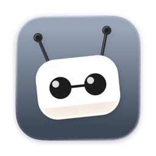
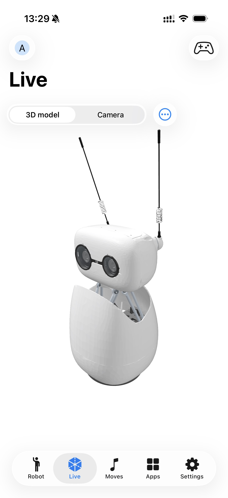
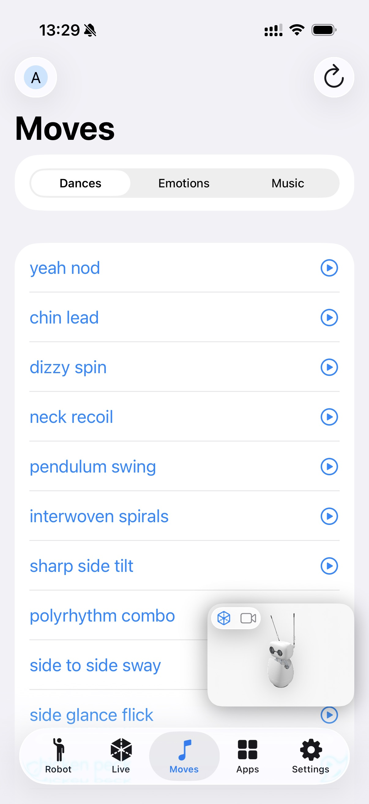
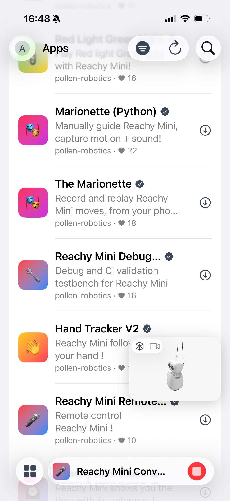
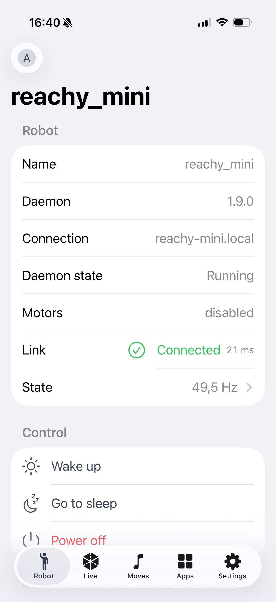

Joystick teleop, the robot's camera and two-way audio, a live 3D twin, recorded moves, a soundboard and the robot app store — for the Reachy Mini Wireless on your desk.
Download on the Mac App Store iPhone and iPad on TestFlight Notarized Mac build
Hey Reachy talks to a Reachy Mini Wireless on your network. Without one the app stops at its Connect screen, because every feature lives behind a live session with the robot's own daemon. There is no demo mode and no account to create.
Bonjour discovery, manual addresses, IPv6 and automatic reconnect. Robots are identified by hardware id, never by IP — the same robot at a new address is still the same robot.
Joystick teleop of the 6-DoF head, the antennas and body rotation, with the camera and two-way audio, so you can talk through the robot's speaker.
A RealityKit scene built from the robot's own URDF and meshes, mirroring what the robot is doing in real time.
Browse and play the recorded moves the robot ships with, from the app or by asking Siri for one by name. Record your own takes straight from the phone, then play them back.
A soundboard for the robot's speaker. Add audio files on your device, send them across and play them with a tap. The library is kept on the device, so a robot that restarts and loses its copy is given it again on the next play.
Install, update and remove robot apps from Hugging Face Spaces, following each job as it runs. Filter and sort the catalogue and pin the ones you use most. The robot wakes itself before an app starts and parks again when it lets go.
The control loop's frequency, worst interval and error count charted live, beside the robot's own processor, memory, temperature and uptime.
An SFTP browser for the robot's filesystem, so a log or a recording is one tap away.
Put a brand-new robot onto Wi-Fi over an encrypted Bluetooth channel, or bring back one that fell off the network — raise the hotspot, restart the daemon, software reset.
Reach your robots from outside their network through the Hugging Face relay. Commands travel on a brokered WebRTC data channel; the daemon's port is never exposed.

Live — the 3D twin, built from the robot's own URDF

Moves — recorded takes, with the viewport floating over them

Apps — the catalogue, with the running app in the dock

Robot — connected over the LAN: wake, sleep and power off
Status and apps on the Home Screen, and the status one on the Lock Screen and in StandBy as well.
Power, a move or an app you choose yourself, a sound, and a button for stopping whatever is running — each one on the Lock Screen and the Action button too.
Wake, sleep, power off, launch an app, play a move, or ask whether the robot is awake and what is running on it — and each of those can name which robot it means, so two Reachys on one desk are told apart.
An accent colour and a matching app icon chosen as one decision, carried into the widgets too.
English, German, Spanish, French and Russian.
There is no server on our side. The app talks to your robot on your own network and, if you choose to sign in, to Hugging Face with your own account. No analytics, no crash-reporting SDK, no advertising, no account with the developer.
The robot's daemon provides no authentication and no encryption of its own. Use Hey Reachy on a trusted private network or on the robot's own access point — never through a port forward or a public address.
Hey Reachy is Apache-2.0 and built on eight public Swift packages — transport and domain, WebRTC media, a
RealityKit scene, the design tokens, the widget layer, SFTP, Hugging Face auth, and the UI that composes them.
ReachyKit is the only one a robot strictly needs, and the only one that pulls in no UI framework.
.package(url: "https://github.com/alexey1312/reachy-mini-swift.git", branch: "main"),The daemon's OpenAPI spec is committed in the repository, the whole suite runs against a MuJoCo simulator with no hardware attached, and every SwiftUI preview is a recorded snapshot test.
The Mac version is on the App Store. iPhone and iPad are in review, and until they land the public TestFlight beta is the way in — one link for all three, installing needs Apple's TestFlight app. The Mac also ships outside the App Store: every release carries a notarized zip.
Download on the Mac App Store iPhone and iPad on TestFlight Notarized Mac build